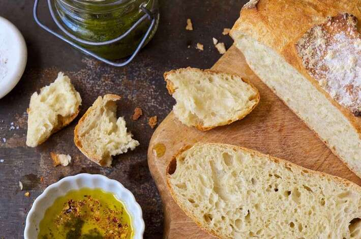

Home
Crusty White Bread


Description
The most basic of all no-knead loaves, this is a wonderful
way to get into yeast-bread baking. The easy stir-together
dough rests in your refrigerator, developing flavor all the time,
till you're ready to bake. About 90 minutes before you want to serve bread,
grab a handful of dough, shape it, let it rise, then bake for 30 minutes.
The result? Incredible, crusty artisan-style bread, worthy of its 2016 Recipe of the Year title.
Ingredients
- 7 1/2 cups unbleached all-purpose flour
- 3 cups lukewarm water
- 1 Tablespoon salt
- 1 1/2 tablespoons instant yeast
Steps
- Combine all ingredients in a large mixing bowl
- Mix everyting together
- Place dough in refrigerator for 4 hours
- Preheat oven to 450 degrees
- Take dough out of refrigerator
- Cover hands in olive oil and form the dough into a ball
- Let dough rest for 45 minutes on a piece of parchment paper
- Transfer dough on parchment paper to baking stone in oven
- Bake for 1 hour and 15 minutes
- Take out of the oven and cover with a cloth
- Allow bread to rest for 1 hour
- Enjoy!